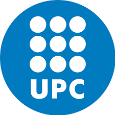

About Me
Hi, I'm Toni. I'm passionate about technology, and I love training neural nets. They bring me hope for a more equitative and peaceful world.
2023-2024
I did my masters at
VIU, where I finished making a thesis to compare and improve fine
tuning techniques for LLMs, aplied to social media toxicity
detection.
2021-2024
I am currently working at
Leitat Technological Center within
the AI team. We are working on projects of all kinds, from computer
vision to NLP and forecasting.
2016-2020

I studied at Universitat Politècnica de Catalunya (UPC), and
published a paper titled
"Applying and Verifying an Explainability Method Based on Policy
Graphs in the Context of Reinforcement Learning", within a research group called
HPAI.